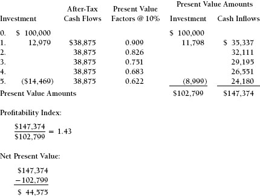
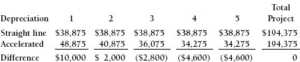

APPENDIX E

Comprehensive Case Study: Woodbridge Manufacturing
This case study provides an overview of the entire process of analyzing an investment opportunity using the discounted cash flow technique. In addition to this overall review, a number of issues will surface that the analyst should consider. These include working capital investment and the impact that product introductions may have on other parts of the business.
Woodbridge Manufacturing Company is considering the introduction of a new product, an especially ergonomically correct computer pad. Sales of one of the company’s existing products will definitely be affected. The bad news is that Woodbridge’s existing product will lose some sales, although not customers. The good news is that the sales will be “lost” to Woodbridge itself rather than to a competitor. The best defense is a strong offense. Someone, whether Woodbridge or a competitor, is going to modernize the product line.
Exhibit E-1 provides sales and cost information for both the new product and the product that will lose some sales. All the events that are incremental to this decision, and only those events, are included in the forecast.
Exhibit E-1. Sales Forecast and Other Information
| New Product: | |
| Annual Sales | 50,000 units |
| Product Selling Price | $2.00 per unit |
| Direct Manufacturing Cost (Without Depreciation) | $0.50 per unit |
| Marketing Support | $0.25 per unit |
| Existing Product: | |
| Lost Sales Annually | 5,000 units |
| Selling Price | $1.80 per unit |
| Direct Manufacturing Cost | $0.60 per unit |
| Marketing Support | $0.25 per unit |
| Other Important Information: | |
| Fixed Asset Investment | $100,000 |
| Forecast Life | 5 years |
| Accounts Receivable | 30 days' sales outstanding |
| Inventory Turnover | 4 times per year |
| Income Tax Rate | 50% |
| Corporate Hurdle Rate | 10% |
| Depreciation | Straight-line, 5 years |
Exhibit E-2 is a forecast income statement for the decision, assuming that the decision is to go ahead with the new product. In this exhibit, the incremental revenue and gross profit resulting from the introduction of the new product are calculated. The gross profit associated with the lost sales of the old product is also reflected. It is subtracted from the forecast gross profit achieved by the project. Because this is an incremental analysis, the forecast does not include any costs or expenses that are not affected by this decision. In line 9, depreciation expense (a noncash expense) is calculated on a straight-line basis, based upon the capital expenditure of $100,000. In line 13, depreciation expense is added back to net income to forecast the after-tax cash flow resulting from the introduction of the new product.
Exhibit E-2. Forecast Income Statement
Exhibit E-3 is a calculation of working capital requirements. This consists of the working capital necessary to support the new product minus the working capital that will no longer be required because of reduced sales of the existing product. Inventory calculations are based upon direct costs, while accounts receivable is based on revenue forecasts.
Exhibit E-3. Working Capital Investment
Comprehensive Cash Flow Forecast
Exhibit E-4 is the comprehensive cash flow forecast. It combines the investment of $100,000 plus the incremental working capital required to support the new product with the improved cash flows that are forecast to result from implementing the new product, thus combining all the elements of the forecast into a comprehensive analysis. The capital expenditure is placed as an up-front investment because it is required before the production of revenue can begin. Working capital investment is placed in period 1 on the premise that it will become necessary as operations begin. The analytical life of this opportunity is five years. This is the lesser of the physical life of the equipment to be purchased and the expected marketing life of the product. Notice that the working capital investment is recovered in the fifth year of this forecast. Conceptually, as the company phases out this product, its inventory will be consumed and the accounts receivable will be collected.
Exhibit E-4. Comprehensive Cash Flow Forecast

Since the proposal has a profitability index of 1.43 and a net present value of $44,575, the ROI is clearly above the target of 10 percent. At 24 percent, the present value of the cash inflows is $106,712 and the present value of the cash outflows (the capital expenditure and the working capital investment less the working capital recovery) is $105,747. Therefore, the actual ROI is just above 24 percent.
Additional Issues
There are many simplifying assumptions that go into a forecast. The first is that the forecast will be achieved. Notice that the working capital investment is placed in Year 1. It could be argued that the inventory will be needed before the project starts (in period 0), whereas the accounts receivable will begin in Year 1. The statement that the working capital investment will be fully recovered in Year 5 is also speculative. Some analysts use Year 6 for this recovery, after the project is over. The idea that all of the inventory can be sold at full price in Year 5 is also questionable. The solution is to prepare the investment and cash flow forecast with as much objectivity and thought as possible, but to never forget that this is a forecast.
The return on investment on this opportunity would have been affected had the accountants chosen to use accelerated depreciation, rather than the straight-line method used in this analysis. The method used in the analysis should reflect what the company will actually use in its tax reporting. Had the analysis reflected the double-declining-balance method of calculating depreciation, the after-tax cash inflows would have been affected as follows:

Accelerating depreciation by using the double-declining-balance method has no effect on the cumulative cash flows over the five-year period. What it does do is accelerate the achievement of those cash flows. The benefit in the first year is a very real $10,000. This reduces the payback period and the associated risk. It also provides the company with more cash that it can reinvest elsewhere. The use of the discounted cash flow technique confirms these improvements. The return on investment with double-declining-balance depreciation is 29 percent. This is only one example of why the company’s accounting policies need to be considered.